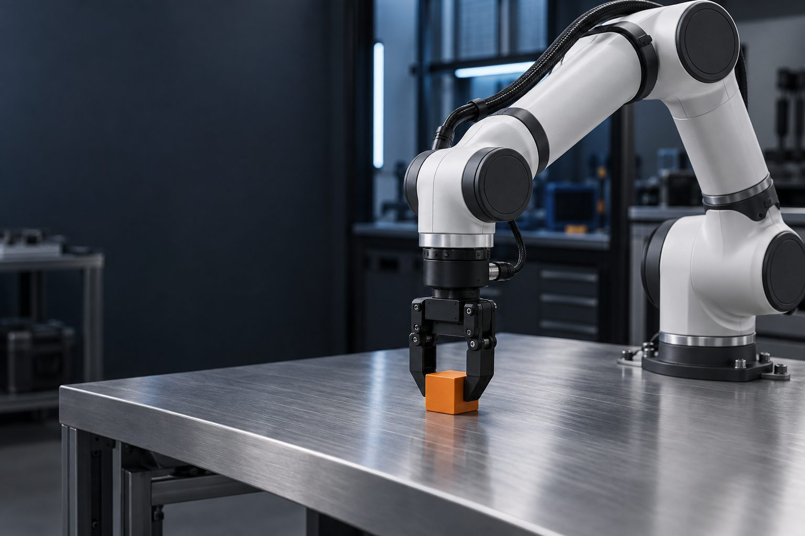

EMBODIED DATA SUPERMARKET · 具身数据超市
训练数据，开架自选。
像逛超市一样挑机器人训练数据：按行业分区、按 2,558 道工序索引，明码标价、先试后买。看中哪件，申请免费样例试一下，合适就下单。
明码标价 · 先试后买 · 来源可追溯
今日在架 · 现货速览IN STOCK · 6 件
精标数据制造与公用设施多场景机械臂精细抓取¥ 9.8 / 轨迹（示例报价）128h · 8,640 条轨迹 基础标注住宅与住宿第一视角日常家务行为询价 · 先试后买256h · 12,800 条轨迹 精标数据制造与公用设施双臂协作装配轨迹¥ 14.5 / 轨迹（示例报价）64h · 4,200 条轨迹
现货数据 · 规格与授权全公开 · 免费申请样例
5/ 12行业分区已开架
2,558道工序索引
6件在架数据包
明码标价 · 可评估下单
明码标价价格与授权透明
来源可溯采集源头可查
规格公开LeRobot / RLDS / HDF5
先试后买免费申请样例
数据超市 · DATA SUPERMARKET
像逛超市一样，按分区、按工序，挑到要用的那一份数据。
按任务层级索引 · TASK HIERARCHY
从行业到工序，逐层定位需要的数据。
住宅住宅与住宿
住宅151 道
洗地垫/脚垫摆鞋雨具归位钥匙杂物归位拆洗窗帘客厅物品归位摆装饰品木地板打蜡石材地面打磨地毯吸尘地毯除渍清洗家具上蜡餐具消毒餐具归位烹饪洗菜备菜洗油烟机燃气灶除垢刷水槽水龙头除垢厨具餐具消毒调料归位厨具餐具归位床垫除螨床品归位床头物品归位刷马桶马桶消毒刷淋浴间刷浴缸消毒花洒除垢瓷砖缝除霉卫生间消毒补充洗手间用品收晾晒衣物洗地垫擦栏杆疏通地漏绿植养护物品归位物品分类摆放除湿防潮除虫防霉清点物品洗洗衣机内筒清烘干机滤网晾晒衣物收叠衣物熨烫衣物杂物归位扫落叶修剪草坪浇花清花坛洗遮阳棚/遮阳伞园艺工具归位拔杂草除地面油污工具归位擦车窗浇水修剪灌木除草施肥松土清落叶修剪花枝擦拭音响设备地面吸尘健身器械消毒换毛巾浴巾器械归位小件器材归位擦拭酒架酒瓶除尘维护温湿度设备擦酒杯检测泳池水质刷泳池池壁吸泳池池底洗泳池过滤设备泳具归位摆躺椅毛巾收晾晒物品疏通排水沟擦桌椅擦案几擦门窗归位桌椅擦相框摆件分类存放除虫清排水口收晾晒物疏通排水管
住宿场所193 道
大堂地面打扫/石材保养地面抛光浇花养护前台物品归位床垫除螨客房卫生间消毒刷马桶刷淋浴间补充客房一次性用品拆洗窗帘餐厅餐具消毒摆桌椅摆餐具调料归位铺桌布布置花艺撤台清理餐具清洗消毒健身器械消毒器械归位小件器材归位检测泳池水质刷泳池池壁吸泳池池底洗泳池过滤设备泳具归位摆躺椅毛巾洗洗衣机内筒清烘干机滤网洗涤烘干布草布草分类收纳布草消毒衣物分类叠衣服洗涤用品归位布草分类码放盘点布草数量除尘清洗空调滤网除地面油污车辆停放整齐清排水沟擦玻璃门马桶消毒刷浴缸消毒花洒除垢水龙头除垢瓷砖缝除霉卫生间消毒补充洗手间用品洗布艺沙发公共物品归位桌椅归位地毯吸尘分类存放除湿防潮除虫工具归位清点物品木地板打蜡石材地面打磨地毯除渍清洗家具上蜡客厅物品归位摆装饰品烹饪洗菜备菜洗油烟机燃气灶除垢刷水槽厨具餐具消毒厨具餐具归位扫落叶修剪草坪浇花清花坛洗遮阳棚/遮阳伞园艺工具归位拔杂草客房清扫撤换床品庭院清理花园修剪阳台清理擦玻璃洗地垫调试投影设备擦白板摆文具水牌会后清理补充茶水器具理疗床品更换毛巾消毒地面消毒补充用品娱乐区设施消毒玩具消毒娱乐器材归位擦桌面台面游乐设施消毒海洋球清洗软垫消毒玩具归位浇水修剪灌木除草施肥清落叶修剪花枝灌溉设备维护地面平整清理垃圾清理碎石帐篷搭建垃圾清理帐篷收纳固定风绳水电桩检查维护排污管清理区域消毒商品补货烤网清洗炭灰清理桌椅擦洗器材检修
服务服务业
维修作业场所89 道
车辆举升故障检修更换配件工位清洁工具归位地面清洁钣金修复打磨钣金喷漆烤漆区域通风配件入库领用配件盘点货物工具整理物料归位开单报价区域保洁设备除尘物品整理归位座椅清洁地面保洁故障诊断检测设备维护洗车擦干内饰清洁区域排水清理废油收集危废暂存定期清运拆机检修元件更换台面清洁元件入库领用元件通电检测故障排查仪器维护垃圾清运旧机存放配件储存拆机检测故障维修清洁装机备件入库领用备件功能测试数据检测维修验证取机交付车辆检修补胎换胎家具修复组装翻新车间清洁打磨工件抛光除尘材料入库领用材料报价四轮定位参数调整设备维护轮胎拆卸安装螺丝紧固动平衡检测配重调整轮胎入库领用轮胎拆表检修机芯维护清洁组装工具保养消毒零件入库领用零件取件交付柜台清洁家电拆洗深度清洗晾干领用工具待清洗家电存放交接
个人生活服务场所120 道
围布更换地面清洁工具清洁消毒物品整理归位毛巾更换水槽清洁药水调配工具消毒区域通风工具整理座椅清洁杂志整理地面保洁收银结算设备除尘垃圾清运毛巾消毒用品补充物料归位床品更换室内消毒仪器操作用品清洁产品陈列货架清洁补货室内清洁计价收费取衣核对水洗机洗晾晒衣物设备维护干洗操作熨烫折叠包装衣物挂放查找交付衣物消毒设备消毒泡脚盆清洗消毒区域清洁茶具清洗热水供应台面清洁布景布置灯光调试拍摄器材维护化妆造型化妆台清洁服装整理清洗衣物修图调色照片处理电脑维护选片展示照片整理打印照片装裱出货更衣柜清洁淋浴间清洁地漏清理泡池清洁换水消毒水温调节桑拿房清洁温度调节通风备餐供餐餐具清洗区域保洁样品陈列场景布置清洁维护礼服整理清洗礼服道具入库领用道具盘点货物维修办公保洁方案制作桌面清洁清洁灯具补充用品浸泡清洗收纳归位消毒柜清洁整理座椅摆放宣传资料清理垃圾桶美容台清洁清理毛发工具收纳清洁水池整理洗护用品清理排水口投放食物添水清理笼舍消毒清理排泄物物品归位前台保洁整理宣传资料布置场地整理教具清洁地面用品发放盘点整理归位擦办公桌整理文件擦拭电脑扫地拖地
餐饮餐饮
餐厅132 道
擦桌椅摆餐具地面清洁清理垃圾桶整理桌布摆台撤台清洁茶具物品归位切菜配菜炒菜装盘清洁灶台清洗餐具打印小票出餐打包整理菜单擦台面传菜收银找零开具小票核对账单整理票据擦座椅整理报刊补充饮水整理餐盘清洁台面清理残渣摆盘切配凉菜冷藏存放消毒刀具砧板入库码放货物盘点货物防潮整理货架摆菜补菜整理餐具撤盘加热测温整理菜品补充冰块摆甜品补货整理甜品补充餐具制作饮品封口打包清洗杯具整理杯子补充原料切配清洁电磁炉补充调料整理调料擦拭调料瓶补充小料摆食材整理食材清洁玻璃整理价签熬汤摆放座椅擦拭茶几整理号牌生火烤肉翻串刷油撒料清洁烤架清理炭灰切串腌制穿串清洗器皿摆寿司递餐切刺身清洁砧板消毒刀具去鱼皮烹饪换水清理池壁喂食清洗池体捞鱼清洗海鲜蒸煮炒制称重淋酱清洗器具调配饮品整理原料摆桌椅布置场地铺桌布布置舞台清洁舞台整理设备擦拭舞台调试灯光分餐扎花门铺红毯擦化妆台整理化妆品清洁镜子补充用品收费开闸摆放车辆清洁车位标识清理排水沟整理桌椅清理杂物清扫落叶浇水除草采摘整理蔬菜施肥煮奶茶切烧腊挂烧腊煮面
快餐小吃场所149 道
打印小票出餐打包整理菜单擦台面地面清洁递餐摆餐传餐清洁台面整理餐具摆桌椅摆餐具上菜传菜撤盘收桌擦桌椅炸制滤油清洁油锅整理食材换油制作饮料调配饮料封口打包清洗杯具整理原料组装餐品配餐打包贴单收银找零开具小票核对账单整理票据煮面捞面调汤清洁灶台下面条清理垃圾桶撤台和面擀面切配醒面摆盘补充菜品调味制作小吃煎炸蒸煮清洁设备翻炒煎肉组装汉堡裹酱摆甜品补货整理甜品挖冰淇淋炒菜装盘清洗餐具装盒封口放餐具码放货物核对订单整理餐盘补充餐具清理残渣入库盘点货物防潮整理货架摆菜补菜整理菜品穿串煮制捞取清洁锅具加汤补充调料整理调料擦拭调料瓶烤制出炉切分清洁烤炉整理烤盘撒料摆早点整理早点摆蒸笼磨豆浆炸油条蒸包子称量面粉揉面发面调馅料切配葱姜擀皮包包子包饺子做馒头做花卷做烧麦搓条切小面团摆放生包子/生馒头蒸馒头煮饺子煮面条熬粥煮茶叶蛋炸油饼煎饺煎蛋烙饼做手抓饼煮豆浆过滤豆浆做豆腐脑装袋配餐具收碗盘清理桌面打包收费推车出摊摆放摊车支遮阳伞清理地面摆放桌椅切菜备料点火开灶翻炒烹饪煎炸蒸煮打包装袋扫码收款擦拭台面整理价目牌食材搬运码放食材清洁储物箱清扫地面清理垃圾冲洗油污收摊清洁
咖啡及饮品场所118 道
磨豆萃取拉花清洁咖啡机整理器具打奶泡手冲清洁器具称豆摆桌椅摆餐具上菜传菜撤盘收桌擦桌椅地面清洁摆放座椅整理报刊补充饮水擦拭茶几打包封口贴单整理打包材料放杯托收银找零开具小票核对账单整理票据擦台面煮茶调配摇制清洁设备补充配料整理配料清洁台面擦拭配料瓶清理残渣煮珍珠打印小票出餐打包整理菜单制作茶饮传杯整理杯具清洗杯具补充茶饮入库码放货物盘点货物整理货物煮制茶汤配料过滤分装清洁锅具整理原料洗水果切水果整理水果补货削皮去核榨汁清洁榨汁机装杯整理饮品清洁玻璃擦拭货架除霜洗茶具泡茶擦茶台整理茶具烫杯斟茶摆茶具清洁茶具整理茶叶罐擦货架清洁茶罐整理价签码放茶罐防潮防异味摆酒整理酒具擦杯清理垃圾桶摆杯具摆酒水调酒装饰摇壶码放酒瓶整理酒瓶清洁酒架补充酒水布置舞台摆座椅整理设备擦拭座椅调试音响摆甜品整理甜品摆价签制作裱花清洁操作台清洗器具熬糖水商品装袋整理商品摆冰淇淋整理冰淇淋擦拭柜门挖球整理食材补充打包袋
零售零售
食品及专门零售场所140 道
摆面包上架补货擦展示柜清洁玻璃检查保质期临期下架夹取装袋称重计价打包扎袋洗夹子托盘打发奶油抹面裱花摆水果插件写字牌装盒清洁操作台清洗裱花工具消毒称料和面分割滚圆整形醒发划刀烘烤出炉冷却清洁烤箱清洁台面收银找零商品装袋开具小票补充包装袋擦台面地面清洁入库码放货物领料盘点货物防潮防虫除霜擦拭柜门卸货搬运摆盘理面喷水保鲜挑拣烂叶称重贴签装袋称重包装清洁砧板磨刀消毒刀具换水清理鱼缸清理残渣清洗池体补充购物袋卸货分拣包裹搬运货物核对数量清理包装垃圾防潮擦货架擦玻璃柜开柜取货检查日期擦桌椅烫洗杯具摆茶具擦玻璃开罐取茶称量装袋洗茶具烫杯泡茶斟茶擦茶台称茶抽真空封口贴标压制茶饼包茶饼码放茶罐防异味清洁茶罐搬卸水桶码放水桶检查空桶装车搬运水桶抱桶上楼上门换水倒扣上饮水机回收空桶清洁车辆核对账单清洗空桶消毒空桶码放空桶检查破损桶舀米装袋调整份量封口灌装散油搬运粮油送货上门擦柜台夹取称重剁段切片翻拌调味装盒扎袋清洗食材焯水卤制切配翻拌清洗锅具清洁冷柜撑袋夹取贴签
综合零售场所124 道
擦货架补货检查保质期临期下架搬运货物摆盘理面切肉称重包装喷水保鲜清洁台面清理残渣盘点货物收银找零商品装袋开具小票补充购物袋擦台面地面清洁补充用品擦拭收银设备退换货处理入库码放货物防潮摆放堆头贴价签擦拭货架制作烘焙烘烤贴标签清洁操作台清洁设备擦购物车清理垃圾摆放促销架清洁玻璃除霜擦拭柜门加热食品煮制关东煮补充包装袋按效期分拣挂衣叠衣熨烫擦拭样机通电试机准备试吃品摆盘补充清理消毒台面接收退货检查登记分类摆放摆放购物车回收购物篮清理杂物挑拣烂叶称重装袋挑拣清洁砧板换水清理鱼缸清洗池体清洁柜台消毒夹取称重装盒清洁货架称量装袋取样本检测样本清洗器皿擦拭台面擦拭电脑擦桌椅清理垃圾桶刷马桶擦洗手台补充厕纸收货验货摆果挑拣坏果清洁冷柜检查温度货物入库码放盘点收货分拣核对订单摆放货品核对提货打包贴单装袋封箱
家居建材零售场所70 道
擦沙发擦拭家具地面清洁摆放样品铺床擦床头柜摆桌椅擦拭桌椅擦办公桌擦拭办公椅擦家具清洁玻璃收银找零商品装袋开具小票擦台面入库码放货物盘点货物防潮擦货架补货清点工具擦拭工具分类摆放称重装袋切割管件清洁管件拉线剪断盘绕电线称重计价擦样品搬运大板清洁板材搬运板材擦拭样品清洁台面调色摇匀漆桶分装小罐试灯清洁配件测试配件搬运样品清洁饰品擦桌椅擦拭电脑摆放购物车回收购物篮清理杂物
专业零售场所188 道
上架归架盘点货物擦书架擦拭图书补货擦货架试笔上架图书擦桌椅地面清洁消毒玩具收银找零商品装袋开具小票擦台面补充用品清理垃圾桶包装图书组装样品装电池演示消毒摆放展品擦拭展示架收纳玩具入库码放货物检查保质期临期下架舀粮称重装袋试穿调整喂食换水清理笼舍补充垫料清理粪便梳毛洗护吹干修剪清洁台面消毒工具梳理毛发擦拭乐器调音摆放乐器清洁配件检修乐器换弦清洁乐器调整琴颈摆座椅擦谱架擦黑板摆乐器修剪花枝插花清理枯叶剪根醒花喷水保鲜浇水松土换盆制作花束包花去刺去叶装盒系缎带插卡片清洁玻璃除霜检查花材挂衣叠衣熨烫充气擦拭球具擦拭器材测试器材清洁装备调试装备摆鞋清洁鞋具拆吊牌清洁镜子补充衣架挂回试穿衣摆模特调整衣架换季陈列摆回试穿鞋取鞋归位擦拭箱包保养擦拭摆回箱包调节背带擦样机清洁柜台通电试机贴膜演示除尘调整展示擦拭设备检修设备换件测试设备擦镜架调整镜架更换试镜片磨镜片装配调整清洁设备加热镜框擦座椅擦柜台擦拭饰品佩戴展示擦沙发泡茶擦拭屏幕擦拭桌面清洁货架复印打印装订塑封补充试用装擦拭试用装清洁试妆工具喷试香纸补充化妆棉卸妆清洁检查有效期抓药称量打包清洁药柜捣碎药材擦拭柜台玻璃补充药品清洁帐篷搭建展示擦拭钓竿抽节试竿分类摆放绕线绑钩清洁渔具分装饵料
文体文体休闲
体育运动场所154 道
擦拭器械整理杠铃片清洁器械把手摆回哑铃地面清洁清理垃圾桶擦拭跑步机清洁屏幕整理器材整理杠铃擦镜子整理垫子清洁音响摆回器材清洁垫子擦更衣柜清洁座椅补充用品擦前台台面整理登记本整理宣传单摆毛巾整理测试器材擦拭器材登记数据场地清洁擦沙发整理茶几摆回杂志检测水质刷泳池壁吸池底清理水面浮物清洁池边刷池壁清理水面消毒擦台面清洁窗户整理救生圈擦拭设备清洁滤网更换滤芯加药摆放座椅整理座椅清理过道擦拭扶手整理报刊补充饮水擦拭茶几擦球架整理篮球清洁边线清理垃圾盘点货物器械归位补充毛巾清扫场地整理球网收球清理落叶整理球拍整理瑜伽垫摆回垫子清洁镜子除草整理球门整理足球清扫跑道清排水沟填沙坑翻沙平整沙地清理器械修剪草坪划线擦球台捡球整理储物柜补充衣架挂放衣物摆器材清洁场地整理设备擦桌椅整理线缆浇冰修冰面清理冰面碎冰清扫冰屑整理冰鞋清洁鞋架擦拭冰鞋检修设备压雪整理雪道清理障碍修补雪道擦拭缆车整理吊椅整理雪板擦拭雪具清洁雪鞋整理雪具清理雪道摆放雪板擦前台整理宣传册巡检设备清洁设备检查管路记录数据擦餐桌摆餐具清洗餐具浇水耙沙坑补草推草擦拭球杆整理球筐清理场地整理更衣柜擦玻璃整理球包清洁推车盘点球具清洁球车检查轮胎擦拭车身摆放球车整理工具擦拭机器存放检查岩点拧紧岩点清洁墙面除尘清洁垫面擦拭防护器材清理杂物整理安全带盘点装备清洁装备擦拭头盔整理绳索摆球整理球杆清洁台面擦吧台清洗杯具补充饮品擦拭球
文化娱乐场所156 道
整理图书擦书架擦桌椅归架地面清洁上架盘点货物防潮擦台面整理借阅卡整理书籍擦拭电脑清洁屏幕整理桌椅除尘整理绘本消毒玩具整理桌面清理垃圾桶摆座椅擦讲台调试设备会后清理擦办公桌整理文件贴标签盖章录入编目码放货物擦拭展柜清洁玻璃清理垃圾布展撤展整理藏品清洁货架擦拭工作台清洗工具整理材料清洁台面整理宣传册整理物品擦货架整理商品补货收银清洁擦座椅整理茶几擦拭屏幕清洁设备整理台账搬运画作挂画调整灯光清洗杯具补充饮品补充资料清洁座椅清洁过道消毒扶手擦柜台整理票务补充爆米花整理展架擦拭设备清洁滤网整理线缆擦沙发擦拭舞台整理道具清洁地板擦化妆台整理化妆品清洁镜子摆放器材擦拭把杆擦镜子整理器材清洁道具清洁展位摆桌椅布置场地收桌椅整理设备擦前台整理宣传架擦玻璃擦餐桌摆餐具清洗餐具收费开闸摆放车辆清洁车位标识清理排水沟搬运展品搭建展架补充茶饮摆放茶点擦拭游戏机整理座椅消毒头显整理桌游擦桌面擦吧台整理礼品清洁柜台擦拭展品清洁展柜消毒擦舞台整理教具摆放教具清洁展示台摆放座椅清理过道擦拭扶手布置舞台摆放乐谱架清洁舞台摆放乐器整理乐谱擦拭乐器擦黑板调整展品整理档案防潮防虫整理登记表扫描档案除草修剪浇水施肥清理落叶调节温度擦拭玻璃擦展台整理展品补充导览资料清排水沟育苗移栽清理藻类投喂换水清理残饵清洁水池擦拭观众席清洗过滤器更换滤芯检修设备清洁茶几消毒话筒整理登记本清洁键盘鼠标清洁外设补充货品
办公办公与公共服务
办公场所82 道
整理前台物品补充宣传资料擦拭前台桌面地面清洁杂物收纳归位桌面整理电脑清洁绿植养护工位消毒垃圾清理办公桌整理擦拭办公设备物品整理归位桌椅摆放设备调试会前布置会后清理白板清洁饮水机维护咖啡机清洁茶具清洗台面清洁补给补充打印机维护纸张补充硒鼓更换碎纸清理文件装订档案归档防潮防虫盘点货物UPS维护设备除尘擦拭台面用品补充设施维修通风除臭设备检修桌面整理清洁柜体整理收纳场地清洁会务布置烹饪食材预处理餐食摆放供餐餐具清洗消毒桌椅摆放归位器材维护擦拭器械淋浴间清洁道闸维护垃圾清运绿化养护设施维护擦拭电脑柜体收纳擦拭话机消毒沙发清洁茶几整理擦拭桌面场地布置设备维护擦拭设备除尘设备点检消防设施检修擦拭设施擦拭沙盘沙盘维护道路清扫交通疏导标识维护室内保洁活动支持环境清洁实验台清洁耗材补充工具整理物料归位咖啡机维护
公共服务场所108 道
擦拭台面设备维护地面清洁物品整理归位台面清洁设备除尘物品整理归纳垃圾清运座椅清洁饮水供应擦拭办公设备防潮防虫盘点货物维护自助机补充纸张擦拭设备区域保洁除尘擦柜台台面整理窗口物品擦拭电脑整理单据清理垃圾桶称重计费打包包裹贴面单整理打包材料清洁台面分拣邮件分类摆放整理货架清理杂物整理邮件装车整理车筐清理地面整理包裹码放货架清点包裹数量擦拭自助机补充凭条纸擦柜台擦填单台整理宣传资料补充笔具补充表格擦展台整理样机擦拭玻璃柜清洁展示台整理价签擦拭自助机屏幕清洁键盘补充凭条擦办公桌整理文件补充表格笔具摆桌椅擦桌椅整理活动器材整理图书擦书架擦会议桌擦白板会后清理擦拭便民设备补充用品整理窗口单据擦沙发擦茶几整理茶具擦玻璃整理填单用品擦拭叫号机擦座椅维护ATM清洁地面整理现金箱擦拭货架整理凭证摆展架整理展位桌椅整理信息板更换宣传页擦显示屏擦拭栏杆整理简历装订擦拭桌面整理面试材料擦台面整理物品整理档案盒擦拭档案架贴标签窗口受理材料整理大厅保洁清洁指示牌查验车辆拍照核对信息场地清洁车辆停放引导档案整理归档防潮防虫盘点
城市城市公共空间
城市道路及街区93 道
地面清洁清理杂物清理积水修补路面清理落叶疏浚排水口铲除口香糖整理交通设施擦拭标牌擦拭护栏除草修剪绿植修剪浇水擦拭灯杆更换灯泡检修灯具清理灯罩清理障碍物修补盲道清除污渍除虫整理座椅擦拭靠背擦座椅擦扶手清扫楼道清理垃圾清排水沟擦拭器械整理器材器械归位清洁垫子清洁设施消毒收费开闸摆放车辆清洁车位标识清理排水沟冲洗地面整理垃圾桶擦门窗清扫门前整理门前物品清洁台阶摆放座椅整理报刊补充饮水擦拭茶几擦拭灯箱检修灯箱整理设施擦拭座椅清理积雪清理堆放检修设施清洁防撞墩擦拭灯具施肥擦拭墙面清理垃圾桶擦墙擦拭扶手擦拭棚面清理排水槽擦玻璃擦拭门框清理碎石清淤疏通边沟加固沟壁清理杂草疏通涵洞加固补划标线清洁路面整理锥桶清扫路面清积水除油污清理口香糖擦洗座椅擦拭垃圾桶绿化带保洁清运垃圾清理抛洒物除雪防滑清扫匝道清排水口清扫桥面擦洗护栏清理边沟清扫
公园、广场等公共空间63 道
除草修剪浇水施肥清理落叶清理杂草清理垃圾地面清洁清理积水清理排水沟清理水面打捞垃圾清淤补水清洁设施消毒整理器材擦拭座椅擦拭器械器械归位清洁垫子擦座椅清理杂物刷漆刷马桶擦洗手台补充厕纸清理垃圾桶整理文件整理单据擦拭电脑擦桌椅收费开闸摆放车辆清洁车位标识冲洗地面整理设施擦拭雕塑检修设施清洁基座整理座椅擦拭靠背擦玻璃擦拭门框疏浚排水口擦拭栏杆擦拭护栏检修护栏除锈擦拭灯具更换灯泡检修灯具清理灯罩擦拭灯杆整理晾晒衣物擦拭晾衣架收晾晒物品擦拭栏面清理灰尘更换宣传页擦拭立柱清理周边杂物整理垃圾桶
教育教育与研究
教育场所90 道
擦黑板擦讲台摆桌椅地面清洁擦门窗清理垃圾桶擦走廊栏杆整理图书擦书架擦桌椅扫码归架擦拭实验台清洗器皿整理试剂清理垃圾擦床架整理床铺通下水道擦餐桌摆餐具清洁售餐台清洗餐具除虫灭鼠清扫跑道除草整理体育器材清排水沟擦办公桌整理文件擦玻璃擦拭诊疗台消毒器械更换床单清理医疗垃圾补充药品摆座椅擦舞台整理设备会后清理擦拭器材整理器材检查设施超市补货理发店保洁洗衣房设备维护垃圾清运清理车位杂物清洁标识摆放车辆擦拭实训设备整理工具清洁台面擦窗户擦拭设备清洁滤网除尘整理线缆擦拭电脑擦沙发整理茶几整理桌面擦前台台面整理宣传资料整理登记簿擦座椅整理杂志调试投影整理话筒擦白板整理马克笔补充茶饮清洁操作台换床单被套铺床叠被擦床头柜清洁卫生间清扫场地整理桩杆擦拭标志清理轮胎整理路标清理障碍物擦拭模拟器清洁屏幕整理座椅整理教材擦拭茶具收费开闸清洁车位标识清理排水沟
实验与检测场所126 道
擦拭操作台清洗器皿消毒台面整理试剂清理废弃物擦拭仪器除尘校准整理配件清洁台面整理样品贴标签分类码放清洁货架防潮擦办公桌整理文件擦拭电脑地面清洁整理硬盘整理线缆更换洁净服擦拭台面消毒接收样品贴编号标签分类摆放搬运入库整理工具擦拭天平校准砝码称样研磨消解萃取整理报告装订擦拭通风橱清洁玻璃清理残渣烘干盘点货物分类收集废液封口清运废液焊接元件拆焊清理焊渣清洁烙铁头整理元件擦拭示波器清洁屏幕整理探头整理静电手环擦拭工作台擦拭防静电垫补充静电手环接线调试焊接测量更换手套擦拭箱体整理培养皿调节温度清洁内部擦拭显微镜清洁镜头整理玻片装锅灭菌取出整理器械清洁设备清洁冰箱除霜擦拭安全柜更换滤网整理物品擦拭平台清洁镜片整理光具整理砝码擦拭设备整理器材整理线圈切割试样打磨试样抛光清洗试样制备金相试样腐蚀装夹试样操作试验机取下试样装炉加热淬火出炉清理炉膛切割镶嵌整理材料接收样本编号分拣离心加样上机检测整理数据试剂入库盘点冷藏领用废弃物收集分类清运样品接收存放粉碎提取仪器维护整理样品存放样品前处理配试剂分析检测
建筑建筑业
施工场所262 道
土方开挖打桩支模绑扎钢筋浇筑振捣养护回填夯实浇筑混凝土拆模砌筑抹灰材料卸车码放货物盖防雨布清点货物领料地面清洁钢筋调直切断弯曲绑扎堆放钢筋除锈模板拼装加固刷脱模剂拆除清理模板挂钩起吊落位摘钩检查整理索具搭设铺设脚手板挂安全网整理架料宿舍清扫食堂备餐餐具清洗垃圾清运整理床铺办公区保洁资料整理图纸打印会议布置文件装订配电箱维护水管铺设线路整理水箱补水电箱除尘拆墙铲除旧面地面破除拆除门窗清运渣土开槽布线布管穿线安装底盒打压试水封槽砌墙贴砖勾缝地面找平吊顶龙骨安装板材切割封板柜体安装五金安装刮腻子打磨腻子刷漆喷漆补漆清理漆具整理工具码放物料垃圾装袋垃圾分类垃圾桶清洁清洁台面消毒补水疏通管道用品补充清表开挖填筑碾压整平洒水养护摊铺接缝处理吊装开挖沟槽铺管砌井清理余土摆放锥桶设置围挡安装标牌回收设施机械停放加油清洁设备简单保养轮胎检查处理预制梁浇筑张拉存放清理梁面架梁就位连接焊接紧固桥面铺装护栏安装伸缩缝施工防水施工清理桥面搭设水上平台围堰清理场地设备固定边坡开挖支护喷浆洞口防护钻孔装药爆破出渣通风管铺设钢筋绑扎防水板铺设风机安装风管铺设风机维护管道固定渣土卸车推平覆盖排水材料入库领用材料盘点货物库房清扫埋设测点仪器架设量测设备维护设备安装接线调试杆塔组立校正附件安装放线紧线挂线压接固定电缆敷设接头制作防护整理线缆螺栓紧固清理设备轨枕铺设钢轨安装扣件紧固道砟捣固轨距调整站台施工轨道铺设排水施工铺装接触网立柱安装架线调整清底修坡下管对口试压防腐井盖安装清理杂物井内清洁分层压实洒水管道连接阀门安装清理井口密封处理坡口打磨焊缝处理探伤清理焊渣压实整地挖坑栽植浇水支撑修剪挖土填土堆坡垫层施工铺砖石材安装木作施工水景施工清洁现场管道铺设喷头安装维护清理喷头假植整理苗木护坡修整衬砌抹面闸门安装启闭机安装运输土方防渗整理场地放缆穿管接续熔接盘纤天线安装塔件组立设备调试参数设置联调掘进清理渣土通风模板支设混凝土浇筑脚手架搭拆轨排组装调整道床材料码放调直绑扎成型卸料码放盘点
制造制造与公用设施
制造工厂421 道
上料贴片机操作换料补料检查贴片清洁吸嘴更换钢网擦拭机器地面清洁锁螺丝贴标签组装外壳自检码放半成品清洁工位上电测试功能测试插拔治具分拣不良品擦拭设备更换洁净服擦拭工作台清洁风淋室清理垃圾擦拭设备表面原料入库码放货架领料发料盘点货物防潮防尘成品入库码放货物打包贴标出库套袋装盒封箱缠绕膜码托盘抽检测量尺寸功能复测贴合格标签清洁检验台装模具操作冲床取件检查毛刺码放工件换模具装夹工件启动机床换刀具去毛刺取件码放清理铁屑点焊焊接打磨焊点检查焊缝换焊丝打扭矩压装检测间隙码放成品三坐标测量检具检测外观检查分拣不良清洁检测台领料模具入库上架领用模具保养涂油卸货称重查验外观搬运入库冲洗原料浸泡刷洗沥水换水清洁水槽清理残渣切配清洗食材分拣食材装盘消毒器具擦拭台面装笼推入杀菌锅设定温度出锅冷却清洁设备装袋封口装箱码垛入库除霜清洁货架调节温度取样本检测样本清洗器皿消毒称料配料搅拌清洗容器梳棉机操作换卷接头清理棉絮换纱锭落纱清洁罗拉穿经接线换梭检查布面清理毛絮染色调色加料水洗脱水烘干清洁染缸定型轧光验布卷布防潮量幅宽检查疵点标记分卷码放木材翻堆测含水率搬运木材划线开料锯切修边码放板材清理锯屑铣型钻孔开榫打磨工件清理木屑装料启动雕刻机抛光除尘检查表面调漆喷漆补漆晾干打磨腻子清洁喷枪换滤网组装部件装铰链贴胶包膜装护角切割锯料吊运清理边角料装夹车削铣削换刀测量清渣打磨焊缝锁紧调试检查工件通电调试参数调整试运行检查设备探伤铺布裁剪分包捆扎清理布屑缝纫锁边换针线剪线头检查衣物清洁机台熨烫挂装清洁烫台检验折叠面料入库辅料入库分类码放投料加热提取过滤浓缩出料清洗设备制粒压片填充胶囊混合灌装灯检清理废弃物滴定清洁滤网紧固螺栓更换滤芯反冲洗加药清洗水箱调糖度清洗罐体上瓶封盖升温杀菌开阀进料擦拭阀门清理围堰加热清洗反应釜蒸馏结晶离心清理设备清理格栅疏通管道检查密封破碎筛选输送清理废料蒸煮打浆漂白上浆压榨卷纸换辊清洁网部配涂料涂布收卷卸料堆垛盖防雨布上墨换版印刷清洗墨辊出片晒版冲版修版装刀模模切清废换刀模上胶折盒压盒检查印刷注塑剪水口吹塑模具装卸存放清洁模具包装配比堆料磨机操作压制成型码坯喷水养护检查坯件搬运坯件装窑推窑烧成出窑清理窑车装车冲压上挂除油清洗工件电镀下挂清洁槽体检查焊点铆接检查组装折页配页装订裁切检查装订覆膜烫金压痕纸品入库调墨打样校色检查冲压件搬运车身换焊枪前处理检查漆面安装发动机加注油液上线检测四轮定位灯光检测制动测试试车检查异响车辆归位清洁车辆零部件入库收费开闸摆放车辆清洁车位标识清理排水沟洗车擦车检查车辆折弯剪板插线通电测试老化测试清洁测试架放说明书原料卸车码放高炉操作出铁清理炉渣转炉吹炼连铸清理钢渣轧制原料破碎入库码放窑操作清理窑灰粉磨设备维护清洁包装码垛搬运熔化操作清理炉口退火切裁磨边清洗配料涂布辊压分切卷绕注液化成分容检测盘点船台合拢分段对接吊装钢材预处理分段组装打磨除锈舾装系缆装卸物料场地清洁
公用设施厂站106 道
加燃料清灰除渣擦拭设备紧固螺栓地面清洁擦拭开关柜除尘清理杂草卸料堆料盖防雨布翻堆更换滤芯加药取样本清洗水箱清理填料清洗水池疏通喷头擦拭操作台清洁屏幕清理垃圾巡检机组抄表清理油污清运灰渣擦拭水泵清洁电机加润滑油排泥刷洗池壁清理浮渣疏通排泥管反冲洗更换滤料清理池面冲洗池体刷洗配制消毒液清洁设备清洗池壁消毒检测样本清洗器皿配药清理格栅渣疏通管道冲洗格栅清运垃圾排砂清理格栅配消毒液脱泥装车清运污泥协助卸料清理散落垃圾冲洗地面分拣垃圾分类投放打包码放货物上料清理滤网摊铺压实覆土消毒除臭导气场地清洁擦拭阀门清理围堰除锈清理杂物除霜加臭擦拭器材补充沙桶倒闸操作清洁屏柜场地除草清洁标识检查油位清洁散热片清洁房间物品归位垃圾卸料引导车辆除臭操作压缩设备装车转运冲洗车辆擦拭车身清理排水沟清洁机柜检查电源记录数据清洁空调滤网检查管路擦拭屏幕
交通交通物流
仓储场所99 道
卸货点货核对数量搬运入库码放货物地面清洁码放货架上架移库盘点货物贴标签按单拣货核对货物搬运货物放货整理货架打包贴单装车插拔充电整理充电器擦拭设备擦办公桌整理文件擦拭电脑整理雨棚清理杂物防滑处理入库出库清洁货架除霜分拣货物清洁滤网更换滤芯检修设备擦拭屏幕清洁设备整理台账除尘整理货物开关门管理开箱封箱整理单据装订擦拭桌面装卸货物清点货物整理栏杆擦拭标牌按单拣选验收货物贴标扫码装箱填充检查货物分类检查密封紧固螺栓检查线路擦拭器材整理水带补充沙桶清洁器材检查包装整理物资清洁物资整理应急物资检查器材补充物资摊粮翻粮收堆粮食通风防虫进出粮清理粮仓检查设备清理杂质过筛整理粮食装粮烘干翻动粮食出粮清理烘干机布药熏蒸清理药渣取样本检测样本清洗器皿整理样品开闭风机清理风机整理设备擦拭风口
物流作业场所67 道
卸货搬运货物码放货物地面清洁分拣货物扫码归类核对货物整理货物装车贴标开箱检查分类贴标签封箱擦办公桌整理文件擦拭电脑安检包裹搬运过检登记异常擦拭设备区域保洁插拔充电枪结算充电费整理线缆擦拭充电桩称重打包贴单擦拭台面上架盘点货物整理货架装卸货物清洁车辆清洁货架收费开闸摆放车辆清洁车位标识清理排水沟装卸货盖防雨布入库防潮过磅称重清洁台面擦拭桌面整理单据擦桌椅整理床铺清理垃圾检修设备换件整理工具点货搬运入库装箱摆放座椅整理报刊补充饮水擦拭茶几清理杂物清排水沟除草清理落叶清点货物
交通服务设施122 道
擦柜台清洁屏幕整理票务地面清洁擦座椅清理垃圾桶擦栏杆检票撕票整理栏杆擦拭设备擦拭标牌收费开闸摆放车辆清洁车位标识清理排水沟搬运行李整理行李车码放行李清理垃圾搬运货物打包称重贴单码放货物整理单据整理文件擦拭桌面擦拭电脑整理商品检修设备换件整理工具插拔充电枪结算充电费整理线缆擦拭充电桩擦桌椅整理床铺换床单被套洗车擦车清理杂物收银找零开具小票核对账单整理票据擦台面擦拭屏幕清洁设备整理台账整理标识补充指示牌擦拭加油机清洁油枪整理管线擦拭加气机清洁软管更换电池整理电池检查电池擦货架补货商品装袋擦拭阀门清理围堰紧固螺栓加油操作收银结算补充油品擦餐桌摆餐具清洗餐具刷马桶擦洗手台补充厕纸整理茶几铺床叠被清洁卫生间除草修剪浇水清理落叶擦扶手擦拭墙面盘点货物擦售票机擦护栏擦屏蔽门检票放行擦拭闸机整理设施擦玻璃清洁滤网除尘清洁传送带整理筐清理异物修补道面补划标线摆放设备擦拭标线装卸货物物品归位分拣行李搬运码放核对标签区域保洁系缆解缆清理码头盖防雨布入库防潮吊装检查货物整理货物擦办公桌擦拭扶手摆放座椅整理座椅清理过道
农业农业
种植农场249 道
耕地耙地起垄开沟播种施基肥追肥浇水灌溉除草松土打药防治病虫害收割秸秆粉碎开水渠放水灌溉修渠清淤疏通管道检修水泵更换滴灌带调节水阀清理过滤网排水停放农机保养农机维修农机更换机油清洗农机加注燃油更换零件清洁库房地面整理农机配件地面清洁搬运种子码放农资清点库存领用种子整理货架防潮处理防虫防鼠摊开粮食翻晒粮食收堆粮食装袋遮盖防雨清选杂质入库搬运码放粮袋通风防潮防虫防鼠翻倒粮堆出库装车平整路面清淤沟渠修补路面疏通水沟加固沟壁清理杂草修复沟渠清理排水口烘干谷物翻粮测温控温出粮装袋清洁设备脱粒清选过筛整地移栽菜苗施肥浇水搭架绑蔓采收开闭大棚调节温度卷放帘幕通风换气吊蔓育苗分拣蔬菜称重装筐整理菜架清洗蔬菜搬运农资码放货物领用农资入库预冷摆放货物保鲜出库清扫库内除霜间苗炼苗移栽整理苗床平整清理杂物修剪换盆防病虫害栽植遮阳配制培养基灭菌接种培养架管理消毒采收整理分级保鲜处理捆扎分扎包装贴标装箱打包清理垃圾预冷冷藏存放擦拭货架插花制作修剪造型换水养护整理展示台疏花疏果套袋拉枝涂白开水阀检修管道清理滴头疏通沟渠调节水量分拣果蔬分选清洗果蔬冷藏采摘搬运果实分拣果实清点货物采摘鲜叶装篓搬运鲜叶摊放鲜叶萎凋杀青揉捻干燥摊凉刷洗炒锅晒青摊晾茶叶收装茶叶防雨翻动茶叶清运垃圾分拣茶叶挑出杂质烂茶拼配复火匀堆入库防潮湿防异味整理收纳工具清洁工具领用工具定植整枝嫁接配肥浇水施肥检修滴灌清理过滤器调节水肥比例卷帘检修温控设备开闭风口检修风机清理风道清洗滤网整理蔬菜整理通道杂物配料拌料封口码放菌包灭菌处理检修灭菌锅装锅出锅无菌接种擦拭台面接种工具消毒翻堆搬动菌包调节温湿度控温控湿催蕾采菇补水清理菇根分拣菌菇保鲜存放清运废料堆肥晾晒粮食收装粮食筛选清洗药材切片挑选炮制烘干翻动药材育种除杂套袋授粉去杂风选取样本发芽试验清洗器皿整理样品耕地整地打药防治晾晒翻晒收装防雨遮盖农资入库领用盘点防潮防虫整理归位灌溉摘棉花采摘棉花搬运
畜牧养殖场119 道
清扫圈舍清理粪便更换垫草刷洗食槽刷洗水槽补充饮水刷洗地面消毒圈舍驱赶归栏搬运草料码放货物翻堆防潮防霉取料压实青贮密封覆盖开窖取料清理窖口覆膜修补挤奶清洗挤奶设备消毒奶杯冲洗地面储存鲜奶送奶地面清洁平整排水补铺垫料配药注射疫苗消毒器具圈舍消毒处理隔离整理收纳物品注射治疗器械消毒整理药品清洁台面清运粪便堆肥喷洒除臭剂补饲饮水围栏维护场地清理拌料搬运饲料领料防潮防鼠清扫禽舍更换垫料刷洗食槽水槽补充食物和水消毒禽舍调节温度换垫料消毒捡蛋装托码放蛋架清洁产蛋箱领用饲料防鼠分拣鸡蛋称重装箱清洁蛋架器具消毒处理病禽整理收纳工具清运粪污注射清扫笼舍刷洗食盆消毒笼舍整理笼具整理产仔箱铺垫料饲喂清洁产仔箱笼舍消毒清洗原料剥皮分割晾晒原料包装入库出库投放饲料添水清粪冲洗猪舍通风饲料入库码放配料冲洗除臭堆肥翻堆卸料盘点配消毒液喷雾消毒冲洗台面清理地面摆放蜂箱码放蜂箱清理场地除草蜂具清洗消毒蜂箱维护整理归位取蜜摇蜜过滤装瓶蜂蜜入库
水产养殖场103 道
清塘晒塘消毒注水泼洒生石灰捞除杂物清理水草开闸进水排水清淤疏通渠道检修闸门开启增氧机检修增氧机清理叶轮添加增氧剂搬运饲料码放货物领用饲料防潮防鼠地面清洁捕捞分拣鱼获称重装筐清洗鱼获换水增氧投放暂养清理池壁整理物品检修设备修缮房屋刷洗池壁排污捞除死鱼清洗池底消毒车间清洗过滤更换滤材检修水泵清理管路反冲洗调节温度清理加热器拌料投放食物装车配药消毒池具器具消毒取样本化验清洗器皿整理试剂洗刷网箱换网修补网衣清理附着物紧固锚绳整理筏架清洗浮球调整绳索更换苗绳采收翻滩播苗清理杂物打扫平台补充物资搬运货物卸货清点货物搬运苗种清点苗种放流清理投放设备回收苗种容器投放鱼礁维护礁体潜水清理礁体清洗甲板检修船机加注燃油整理缆绳保养船体装箱搬运鱼获投喂清污捕捞亲本清洗孵化器调节水温捞取鱼卵分苗培养饵料整理饵料清理沉淀打包充氧贴标冲洗池体检修设施
在架 6 件数据包演示货架 · 示例数据与报价

概念配图DEMO / 01
DEXTEROUS MANIPULATIONRGB + Depth + Action
工序样例 · SAMPLES3 帧示意
抓取标注
整理标注
放置标注
多场景机械臂精细抓取
128 小时8,640 条轨迹
RGB / Depth / Action查看数据
数据结构示意DEMO / 01
EGOCENTRIC HUMAN ACTIVITYRGB + Language
工序样例 · SAMPLES3 帧示意
整理标注
清洁标注
物品交互标注
第一视角日常家务行为
256 小时12,800 条轨迹
RGB / Language查看数据
概念配图DEMO / 01
BIMANUAL ASSEMBLYRGB + Force + Action
工序样例 · SAMPLES3 帧示意
装配标注
对齐标注
插接标注
双臂协作装配轨迹
64 小时4,200 条轨迹
RGB / Force / Action查看数据
数据结构示意DEMO / 01
SPATIAL NAVIGATIONRGB + Depth + Pose
工序样例 · SAMPLES3 帧示意
导航标注
避障标注
定位标注
仓储移动与环境感知
180 小时5,600 条轨迹
RGB / Depth / Pose查看数据
数据结构示意DEMO / 01
SIMULATED INTERACTIONRGB + Depth + Action
工序样例 · SAMPLES3 帧示意
抓取标注
推移标注
多物体交互标注
桌面操作仿真任务集
320 小时24,000 条轨迹
RGB / Depth / Action查看数据
数据结构示意DEMO / 01
RETAIL OBJECT INTERACTIONRGB + Language
工序样例 · SAMPLES3 帧示意
整理标注
识别标注
取放标注
零售物品识别与整理
96 小时7,200 条轨迹
RGB / Language查看数据